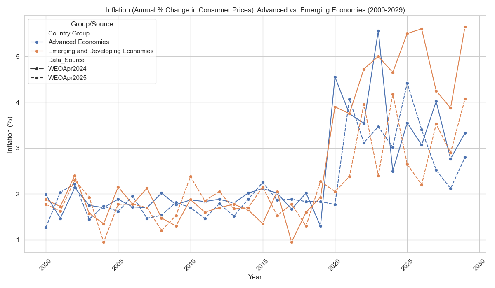
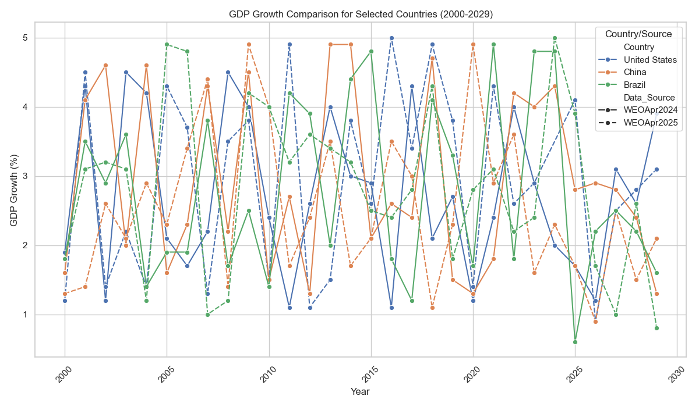
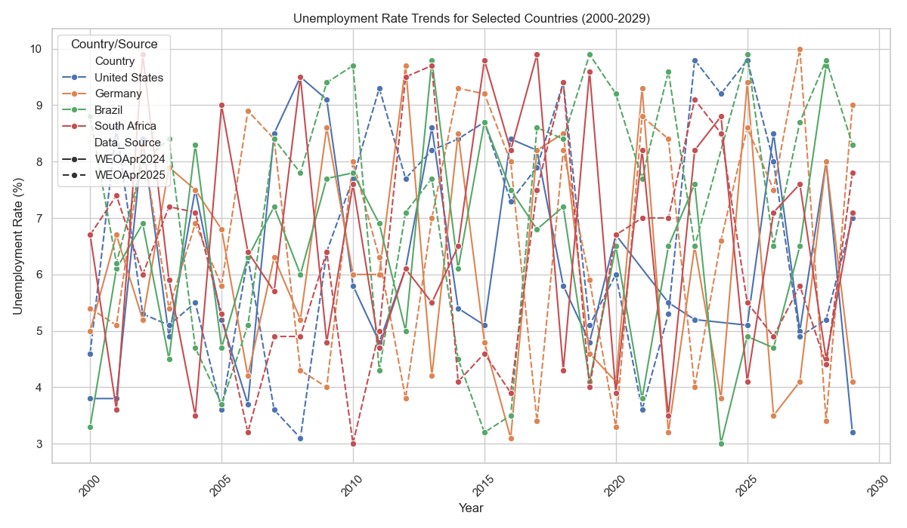

Panorama Econômico - Uma análise a partir do Fundo Monetário Internacional
Análise de Dados
Business Intelligence
Séries Temporais
Python
FMI
Visão Geral do Projeto
Este projeto apresenta uma análise de dados macroeconômicos retirados de publicações do Fundo Monetário Internacional (FMI) World Economic Outlook (WEO) de abril de 2024 e abril de 2025. O objetivo principal foi explorar tendências históricas, estimativas e projeções para indicadores chave como Crescimento do PIB, Inflação e Taxa de Desemprego. A análise compara o desempenho entre grupos de países (Economias Avançadas vs. Emergentes e em Desenvolvimento) e as diferenças nas previsões entre as duas edições do WEO.
1. Crescimento do PIB (Produto Interno Bruto) 📈
Observações Gerais (2000-2029)
- As Economias Emergentes e em Desenvolvimento consistentemente demonstram taxas de crescimento do PIB mais elevadas do que as Economias Avançadas ao longo do período analisado. Esta é uma tendência histórica que reflete o processo de convergência e industrialização de muitas dessas nações.
- Ambos os grupos de países mostram uma desaceleração geral no crescimento nas estimativas recentes e nas projeções futuras (a partir de 2024), sugerindo um cenário econômico global mais contido ou uma maturação das economias emergentes.
Diferenças nas Previsões e Projeções (2024-2029)
- A comparação entre as previsões e projeções do WEO de Abril de 2024 e Abril de 2025 revela pequenas revisões nas expectativas de crescimento.
- Para as economias avançadas, a previsão/projeção de abril de 2025 (linha laranja pontilhada em um gráfico, se houvesse) parece indicar um crescimento ligeiramente mais baixo em alguns anos futuros do que a de abril de 2024 (linha azul contínua).
- Para as economias emergentes, as previsões e projeções também mostram ajustes, mas a tendência de crescimento mais robusto permanece em ambas as edições. Isso indica que, embora haja ajustes finos nas previsões do FMI ao longo do tempo (refletindo novas informações econômicas entre as publicações), as tendências macroeconômicas de longo prazo para grupos de países tendem a ser consistentes.
2. Inflação (Variação Anual dos Preços ao Consumidor) 💸
Observações Gerais (2000-2029)
- A inflação nas Economias Emergentes e em Desenvolvimento tende a ser mais volátil e, em média, mais alta do que nas Economias Avançadas. Isso pode ser atribuído a fatores como políticas monetárias menos estáveis, dependência de commodities ou choques externos.
- Ambos os grupos mostram um aumento de inflação em anos recentes (pós-2020, ou seja, dados históricos/estimativas), refletindo as pressões inflacionárias globais observadas, seguidas por uma tendência de desinflação nas estimativas e projeções futuras.
Diferenças nas Previsões e Projeções (2024-2029)
- Para a inflação, as previsões e projeções do WEO de Abril de 2025 (linhas pontilhadas) parecem indicar uma desinflação um pouco mais rápida ou um nível de inflação ligeiramente menor para os anos futuros em comparação com as de Abril de 2024 (linhas contínuas). Isso pode sugerir uma visão mais otimista ou uma resposta de política monetária mais eficaz esperada pelo FMI em suas publicações mais recentes.

Gráfico 2: Inflação (projeções WEO Abril 2024 vs. Abril 2025) para Economias Avançadas e Emergentes.
3. Análise por País Selecionado 🌍
Crescimento do PIB: Brasil, China e Estados Unidos
- A China consistentemente exibe o maior crescimento do PIB entre os países selecionados, refletindo sua trajetória de desenvolvimento robusta. No entanto, suas estimativas e projeções futuras indicam uma desaceleração, mas ainda acima dos outros países.
- Os Estados Unidos mostram um crescimento mais estável e maduro, com flutuações nas estimativas e projeções.
- O Brasil apresenta uma trajetória de crescimento mais volátil, com períodos de estagnação ou crescimento baixo (dados históricos/estimativas) , e projeções que indicam um crescimento moderado para os anos futuros, alinhado com o desempenho de outras economias emergentes. As diferenças de previsão/projeção entre WEOApr2024 e WEOApr2025 para o Brasil são visíveis, com o relatório de 2025 sugerindo um crescimento ligeiramente menos otimista em alguns anos.

Gráfico 3: Crescimento do PIB (WEO Abril 2025) para Brasil, China e EUA.
Taxa de Desemprego: EUA, Alemanha, Brasil e África do Sul
- As Economias Avançadas (EUA, Alemanha) tendem a ter taxas de desemprego mais baixas e estáveis (dados históricos/estimativas) em comparação com as Economias Emergentes (Brasil, África do Sul).
- O Brasil e a África do Sul mostram taxas de desemprego significativamente mais altas e mais voláteis (dados históricos/estimativas), com a África do Sul apresentando os níveis mais elevados, refletindo desafios estruturais de seus mercados de trabalho.
- As previsões e projeções de abril de 2025 mostram pequenas variações em relação às de abril de 2024, mas as tendências gerais de cada país permanecem consistentes.

Gráfico 4: Taxa de Desemprego (WEO Abril 2025) para EUA, Alemanha, Brasil e África do Sul.
Maiores Insights Obtidos 💡
- Divergência de Crescimento Persistente: As Economias Emergentes e em Desenvolvimento continuam a ser o motor de crescimento global, superando consistentemente as Economias Avançadas em termos de expansão do PIB, embora com maior volatilidade nos dados históricos e nas projeções.
- Inflação em Transição: Após um período de pressões inflacionárias globais observadas (dados históricos), as previsões e projeções do FMI indicam uma tendência de desinflação para ambos os grupos de países, com a publicação mais recente (WEOApr2025) sugerindo uma normalização ligeiramente mais rápida dos níveis de preços.
- Ajustes Contínuos nas Previsões e Projeções: O FMI, em suas atualizações anuais, realiza ajustes finos em suas previsões (para o ano corrente e próximo) e projeções futuras, refletindo novas informações e a evolução do cenário econômico global entre as publicações. Embora as revisões possam ser pequenas, elas indicam uma visão dinâmica da economia.
- Desafios Estruturais em Economias Emergentes: Países como Brasil e África do Sul enfrentam desafios persistentes como maior volatilidade do PIB e taxas de desemprego elevadas (visível nos dados históricos e esperada nas projeções), contrastando com a maior estabilidade e menor desemprego observados em economias avançadas como EUA e Alemanha.
← Voltar para o Portfólio